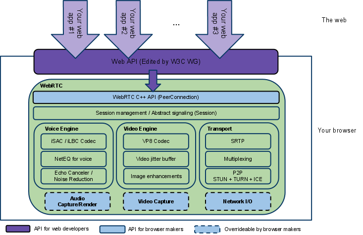

WebRTC
- Web Real-Time Communication
- API to exchange media and arbitrary data between peers inside Web pages
- It uses peer-to-peer principles
- Supported by Google, Mozilla, Microsoft, Opera
- Specifications
- History
- Google acquires company Global IP Solutions (GIPS) in 2010
- GIPS developed underlying technology (codecs, echo cancellation techniques), released as open source
- Google promoted the work around GIPS to W3C and IETF
WebRTC Main Tasks
- Acquiring audio and video
- JavaScript API:
MediaStream(aka getUserMedia) - Communicating audio and video
- JavaScript API:
RTCPeerConnection - Communicating arbitrary data
- JavaScript API:
RTCDataChannel
GetUserMedia
- JavaScript code
var constraints = {video: true};
function successCallback(stream) {
var video = document.querySelector("video");
video.src = window.URL.createObjectURL(stream);
}
function errorCallback(error) {
console.log("navigator.getUserMedia error: ", error);
}
navigator.getUserMedia(constraints, successCallback, errorCallback);
- Control the contents of the MediaStream
- Media type, resolution, frame rate
RTCPeerConnection
- Allows to communicate media stream acquired by
getUserMedia - Video chat, audio chat, screen sharing
- Some capabilities of
RTCPeerConnection - Signal processing
- Code handling
- Peer to peer communication
- Security
- Bandwidth management
WebRTC Architecture
-

Communication
- Two phases
- Signaling
- WebRTC defines abstract signalling
- apps can use any singaling protocol, can use any such as SIP, XMPP, or custom using XHR or Websockets
- Exchange of real-time data in peer-to-peer manner
- Abstract signaling
- Need to exhange session description objects
- Formats, codecs the peers want to use
- Network information for peer-to-peer communication
- This information is captured as
RTCSessionDescription(also SDP) structure - Any messaging mechanism and protocol
SIP and SDP
- Standards
- SIP – Session Initiation Protocol, protocol to establish and modify sessions.
- SDP – Session Description Protocol, describes media for a session, defined in
- SDP Example
v=0 o=- 7614219274584779017 2 IN IP4 127.0.0.1 s=- t=0 0 a=group:BUNDLE audio video a=msid-semantic: WMS m=audio 1 RTP/SAVPF 111 103 104 0 8 107 106 105 13 126 c=IN IP4 0.0.0.0 a=rtcp:1 IN IP4 0.0.0.0 a=ice-ufrag:W2TGCZw2NZHuwlnf a=ice-pwd:xdQEccP40E+P0L5qTyzDgfmW a=extmap:1 urn:ietf:params:rtp-hdrext:ssrc-audio-level a=mid:audio a=rtcp-mux a=crypto:1 AES_CM_128_HMAC_SHA1_80 inline:9c1AHz27dZ9xPI91YNfSlI67/EMkjHHIHORiClQe a=rtpmap:111 opus/48000/2 ...
Signaling Diagram

JavaScript Session Establishment (JSEP)
- JSEP is a protocol to create a session between two parties
- JSEP steps between Alice and Bob
- Alice creates an offer that contains her local SDP.
- Alice attaches that offer to
RTCPeerConnectionobject. - Alice sends the offer to a singaling server using custom-built mechanism (WebSocket, XHR, etc.)
- Bob receives Alice's offer from the signaling server
- Bob creates an answer using his local SDP.
- Bob attaches his answer along with Alice's offer to his own
RTCPeerConnectionobject. - Bob returns his answer to the singaling server.
- Alice receives Bob's offer from the singaling server.
Interactive Connectivity Establishment
- ICE – Interactive Connectivity Establishment
- Allows WebRTC to overcome complexities of real-world networking
- Finds the best path to connect peers such as
- direct P2P communication.
- by using STUN or TURN servers.
- STUN – Session Traversal Utilities for NAT
- Allows to discover the presence of a NAT server.
- Allows to discover the public IP address and a port that the NAT has allocated for UDP flows.
- It is provided as a third-party network server (STUN server) located on the public side of the NAT.
- TURN – Traversal Using Relays around NAT
- Communication relay for hosts behind NAT when STUN does not work.
STUN
- STUN is a simple server, cheap to run
- Data flows peer-to-peer

TURN
- a cloud fallback when peer-to-peer does not work
- data sent via a relay server, uses server bandwidth